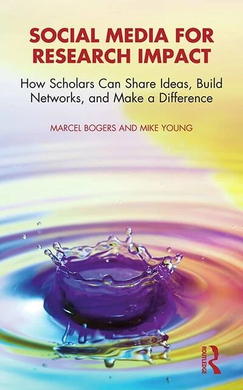

Clarify
Define what meaningful research impact looks like for you.
A companion resource hub for researchers who want to use social media purposefully, ethically, and sustainably. Clarify your strategy, shape your public presence, and turn research into meaningful connection and impact.
Social Media for Research Impact: Developing Purposeful Strategies for Academic Openness is an interactive workshop for researchers across disciplines, career stages, and levels of social media experience.
Rather than treating visibility or follower counts as ends in themselves, the workshop helps participants make deliberate choices about whether, where, and how social media can support their scholarly goals and broader research impact. Through concise inputs, reflection, peer exchange, and hands-on activities, participants develop a strategy that fits their audience, values, available time, and preferred level of visibility.
There is no single right way to be visible. The aim is to develop the right strategy for you.
Define what meaningful research impact looks like for you.
Develop a personalized and values-consistent social media strategy.
Leave with concrete next steps and a sustainable way forward.
These two tools help you capture your strategy, test your choices, and continue working after the session.
Turn workshop reflection into a clear, downloadable strategy. Capture your priorities, make your choices explicit, and revisit the canvas as your research, audience, or goals evolve.
Open the Compass Canvas ↗Stress-test your strategy, translate research for different audiences, and draft or refine content while retaining accuracy, judgment, and scholarly voice. The coach is designed to support your thinking, not replace it.
Open the AI Coach ↗ ChatGPT sign-in may be required. Do not enter confidential or sensitive material.
Written by Marcel Bogers and Mike Young, this practical and reflective Routledge guide helps researchers use social media in ways that align with their scholarly goals, working style, ethical values, and available resources.
Drawing on cases from researchers around the world, the book explores how social media can support collaboration, audience engagement, community-building, knowledge exchange, and real-world impact, without reducing academic life to constant self-promotion.
The workshop brings together expertise in academic openness, open and collaborative innovation, research impact, and responsible applications of generative AI.
Marcel is Full Professor at Eindhoven University of Technology and a Research Fellow at the University of California, Berkeley. His work focuses on open innovation, innovation ecosystems, and creating real-world impact from research. He is co-author of Social Media for Research Impact.
Attabik is a researcher at Tilburg University. He studies why multi-actor collaborations for innovation succeed or become trapped in cycles of delay and fragmentation. He also designs and delivers workshops on responsible generative AI for academic research and education.